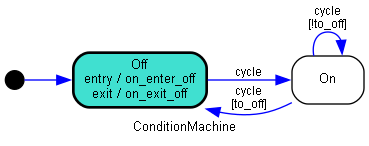
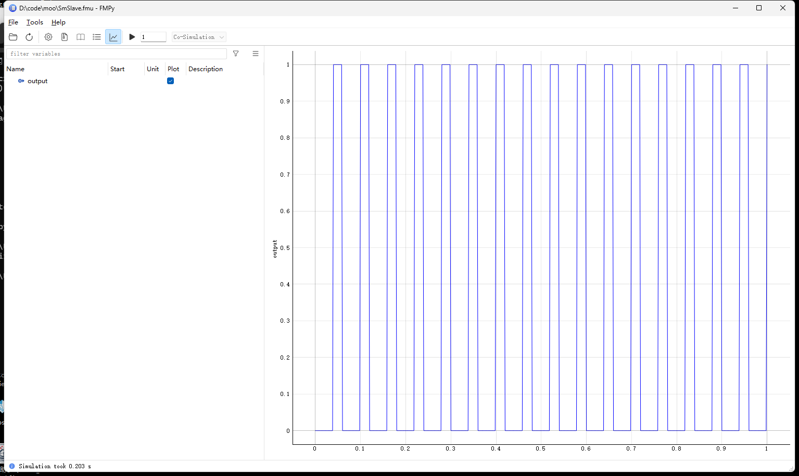

Python 状态机
还是在做fmu 时引出的问题，需要用到Python State Machine
概览
python-statemachine 的使用，需要定义一个状态机子类，集成StateMachine。在子类中定义全部的状态、转移条件以及事件处理函数。代码结构如下：
from statemachine import StateMachine, State
class TrafficLightMachine(StateMachine):
"""
交通灯状态机
"""
# 定义状态
green = State(initial=True) # 初始状态
yellow = State()
red = State()
# 事件名`cycle`：状态流动的方向
cycle = (green.to(yellow) |
yellow.to(red) |
red.to(green))
def before_cycle(self, event: str, source: State, target: State, message: str = ''):
message = ". " + message if message else ""
print(f"事件 {event}：从 {source.id} 到 {target.id}{message}")
return "OK" # 返回结果可以从对象的send("cycle") 方法返回
# 进入状态触发事件
def on_enter_red(self):
print("禁止通行")
# 退出状态事件
def on_exit_red(self):
print("允许通行")
sm = TrafficLightMachine()
# 需要安装pydot
sm._graph().write_png("sm.png")
sm.send("cycle")
sm.send("cycle")
sm.send("cycle")
# 执行结果
# 事件 cycle：从 green 到 yellow
# 事件 cycle：从 yellow 到 red
# 禁止通行
# 事件 cycle：从 red 到 green
# 允许通行转移条件
下面代码可以实现如下的效果：

在执行5 次cycle 事件之后，才会从on 转移到off。这一功能可以很方便地来实现微控制器的模拟。只是不知道效率如何。同样的道理，也可以用来做更加复杂的判断：
from statemachine import StateMachine, State
class ConditionMachine(StateMachine):
"""
条件转移状态机
"""
# 定义状态
off = State(initial=True) # 初始状态
on = State()
# 事件名`cycle`：状态流动的方向
cycle = (on.to(on, unless="to_off") | # on->on 除非满足to_off()=True
on.to(off, cond="to_off") | # on->off 当满足to_off()=True
off.to(on))
def __init__(self):
self.count = 1
def to_off(self):
res = self.count % 5
return res == 0
def before_cycle(self): # 理论上可以接收参数的，sm.cycle(params)
# print(f'{self.count}')
self.count = self.count + 1
# 进入状态触发事件，初始化状态时也会触发
def on_enter_off(self):
print("Off")
# 退出状态事件
def on_exit_off(self):
print("On")
sm = ConditionMachine()
# 需要安装pydot
sm._graph().write_png("sm.png")
sm.send("cycle")
sm.send("cycle")
sm.send("cycle")
sm.send("cycle")
sm.send("cycle")
# 输出
# Off
# On
# Off观测器
通过单独定义观测器，可以在不修改状态机源代码的情况下来添加更多的行为。
导出FMU
这篇笔记最初的目的就是为了导出fmu，以下代码可以在Windows 平台上顺利编译并通过测试：
# DON'T Add Any Chinese Charactor
from typing import Any
from pythonfmu import Fmi2Slave, Real, Fmi2Causality
from statemachine import StateMachine, State
class ConditionMachine(StateMachine):
"""State Machine to generate rectangle wave"""
off = State(initial=True)
on = State()
cycle = (on.to(on, unless="to_off") |
on.to(off, cond="to_off") |
off.to(off, unless="to_on") |
off.to(on, cond='to_on'))
def __init__(self, model: Any = None, state_field: str = "state", start_value: Any = None, rtc: bool = True, allow_event_without_transition: bool = False):
super().__init__(model, state_field, start_value,
rtc, allow_event_without_transition)
self.count = 1
def to_off(self):
self.count = self.count % 10 # delay 10 steps
return self.count == 0
def to_on(self):
self.count = self.count % 20 # delay 20 steps
return self.count == 0
def before_cycle(self):
self.count = self.count + 1
class SmSlave(Fmi2Slave):
author = "12Tall"
description = "A FMU with Satate-Machine Slave"
def __init__(self, **kwargs):
super().__init__(**kwargs)
self.sm = ConditionMachine()
# No input
self.output = .0
# Register output as OUTPUT VARIABLE
self.register_variable(Real("output", causality=Fmi2Causality.output))
def do_step(self, current_time: float, step_size: float) -> bool:
self.sm.cycle() # execute state machine
# update output
if self.sm.current_state == self.sm.on:
self.output = 1
else:
self.output = 0
return True仿真结果如下图所示：

参考资料
- Python State Machine
- How to pass --no-use-pep517 to a particular dependency
poetry run python -m pip install *** --no-use-pep517哎 - Cannot import QtWebKitWidgets in PyQt5